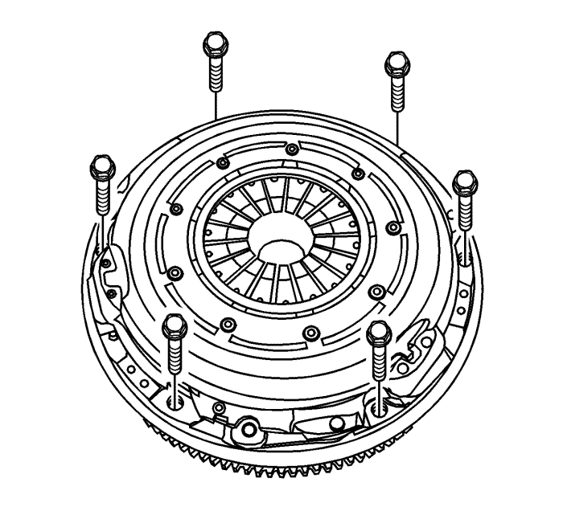
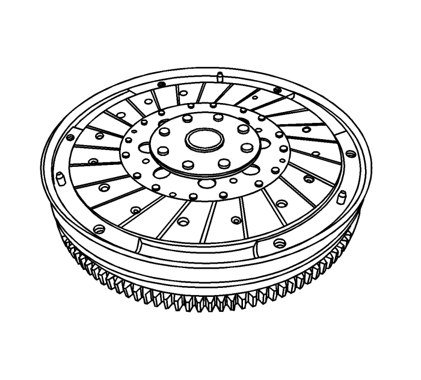
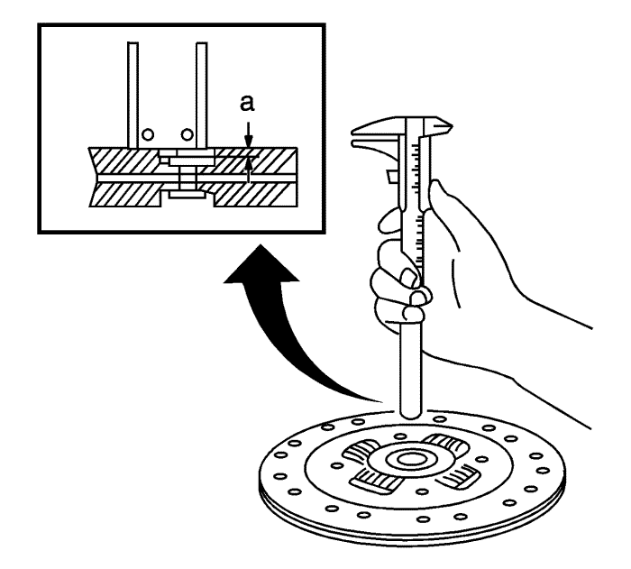
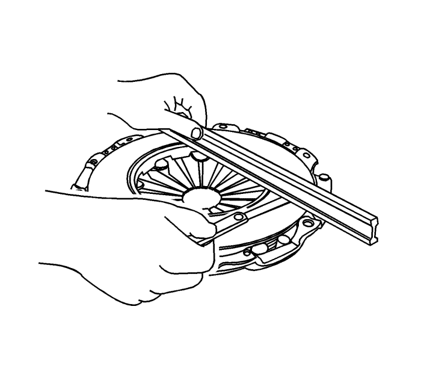
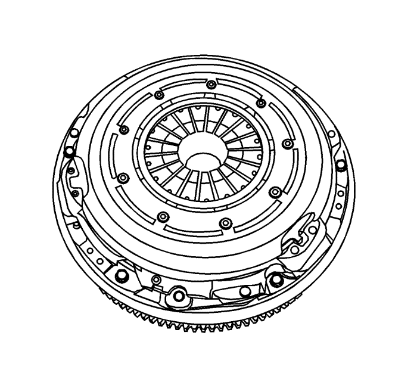

Sustitución del conjunto de embrague — V6
Procedimiento de desmontaje
Advertencia: Consulte Advertencia sobre la desconexión de la batería en la sección Prólogo.

- Desconecte el cable de batería negativo.
- Desmontar el eje de transmisión del vehículo. Consultar Sustitución de la caja de cambios .
Nota: Apoye la placa de expulsión cuando extraiga el último tornillo.
- Desmonte los tornillos de la placa de expulsión y la placa misma.

- Desmonte el disco del embrague del volante motor.
Inspección del disco del embrague

- Examen visual
| • | Compruebe el desgaste o la contaminación con aceite de la superficie del embrague. |
| • | Compruebe los daños y debilitaciones del muelle de torsión. |
| • | Compruebe si el disco del embrague está retorcido o doblado. Tras la revisión, sustituya con una placa de expulsión nueva y un disco de embrague nuevo si fuera necesario. |
- Inspección del disco del embrague
| • | Mida la profundidad de la cabeza del remache a partir de la superficie del disco del embrague. |
| • | Sustituya la placa de expulsión nueva y el disco de embrague nuevo si los valores obtenidos están por debajo del límite. |
| • | Límite de profundidad de cabeza de remache: 1,2 mm (0,047 in). |
Inspección de la placa de expulsión

- Compruebe si algún resorte elástico de diafragma se ha desgastado.
- Compruebe si la superficie de la placa de expulsión se ha desgastado o quebrado.
- Compruebe si la superficie se ha contaminado con aceite. Tras la revisión, sustituya con una placa de expulsión nueva y un disco de embrague nuevo si fuera necesario.
Procedimiento de montaje

- Lubrique la ranura del disco del embrague con grasa multiusos.
- Alinee la placa de expulsión y el disco del embrague en el volante motor mediante una herramienta apropiada.
Precaución: Consulte Precaución con las fijaciones en la sección Prólogo
Nota: Al sustituir la placa de expulsión o el disco del embrague, hágalo por placas y discos nuevos.
- Monte los tornillos de la placa de presión y apriete hasta 28 N·m (21 lb ft).
- Monte el eje de transmisión en el vehículo. Consultar Sustitución de la caja de cambios .
- Conectar el cable de batería negativo.
| © Copyright Chevrolet Europe. All rights reserved |